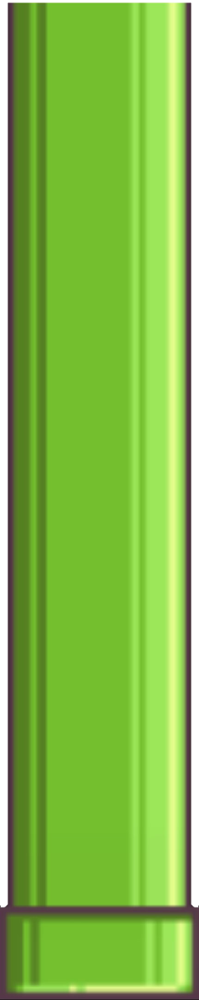
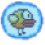
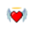
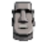

Customize Game

Day Mode


The objective of the game is to navigate a bird through a series of pipes without colliding with them. The longer the bird survives without colliding, the higher the score.
• Jump: Spacebar to make the bird jump.
• Shield: Press "Q" to activate.
• Extra Life: Press "W" to activate.
• Invulnerability: Press "E" to activate.
|  | Shield - Cost 10 Skill point Protects the bird three times from collisions for a limited time |
|  | Revive - Cost 20 Skill point Allows players to continue the game after a collision, providing a second chance. |
|  | Invulnerability - Cost 30 Skill point Makes the bird invulnerable to collisions for a limited time |
• Skill points are randomly awarded after passing pipes.
• You can't earn any skill points when skills are activated.
Day Mode